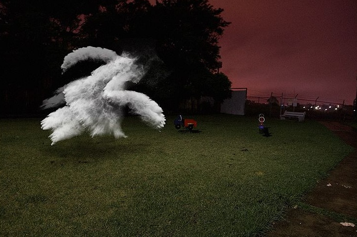
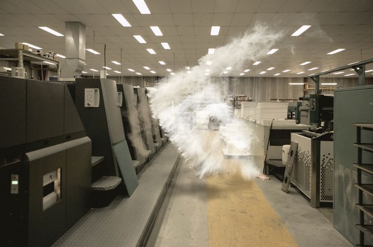
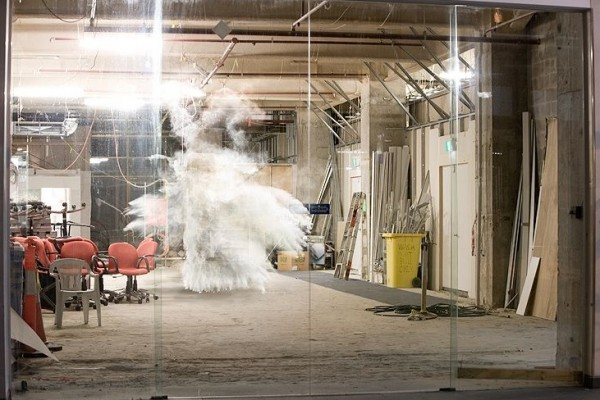
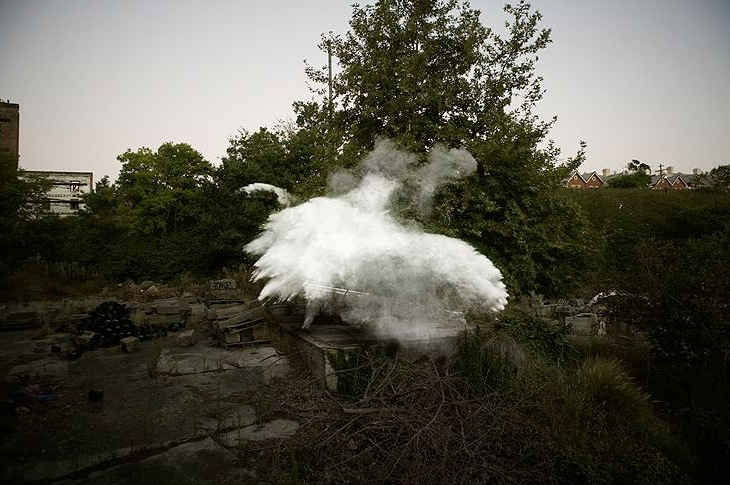

Dust Project
In an effort to shift from commercial to artistic work, photographer Ujin Lee captured a series of images of dust frozen in time as a visual symbol of life. I would love to know how he technically captured these images.
Found on Hey! Hot Shot
On an unrelated note, check out this post on my site to see a working demo of my new jQuery Tumblr Photoset plugin. This plugin lets you to maintain Tumblr’s awesome new photoset layout options at virtually any size—from 100px to 1000px wide. You can also see this plugin in action on the Inspire Well theme, and by the end of the week it will be in use on all the other Style Hatch themes. I’ll post more details on the plugin when I release it later this week.